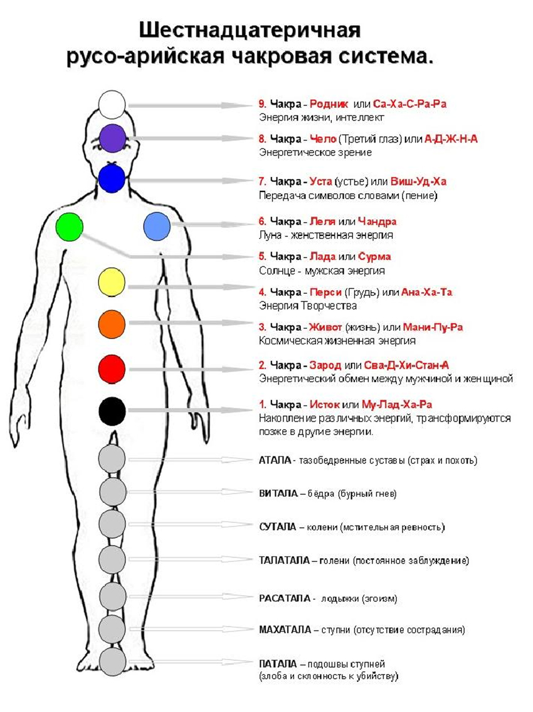
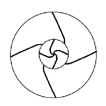
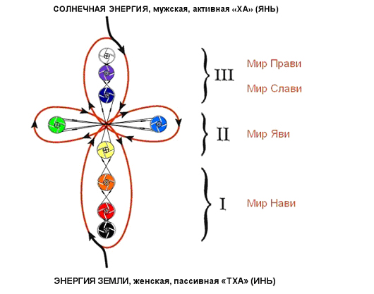

Шестнадцатеричная русо-арийская чакровая система.
Ведическая Древняя Мудрость всегда способствовала гармоничному развитию человека, т. е. развитию его тела, энергетической системы, его Души и Духа, а также Совести, так как это необходимо для дальнейшей Жизни в более высших структурах энергий. В начале своего развития человек должен изучить и понять свой собственный мир, то есть - себя, как многоструктурную систему, состоящую из первоэлемента (энергии, проявленной в разном качестве) и несущую в себе многогранный образ Мироздания.
Наши Предки знали, что материя - это плотно концентрированная энергия в различных проявлениях, и что любой материальный объект имеет свою энергетическую плотность. В свою очередь человек состоит из совокупности энергий различной плотности, различных волн, различной частоты. То есть: самой плотно сконцентрированной энергией является скелет человека, менее концентрированной - мышечная система, кровь, нервная система и т.д., ещё менее плотной является энергетическая система (биополе, чакры, энергетические тела). И все эти системы взаимосвязаны друг с другом, т.е. это и есть Триединство Духа, Души, и Тела. Кроме всего этого, у гармоничного человека существуют: Характер – Сила Воли, Харизма – Родовой Дух, Душа и Совесть. В современном мире люди не учитывают всей сложности строения человека. Некоторые люди занимаются усовершенствованием физической и энергетической системы, забывая совсем про Духовную основу и Совесть. Также многие считают себя всего лишь грубой материей (телом) и живут только для удовлетворения своих инстинктов. A наши Древние Предки воспринимали своё тело как биоорганическую одежду для существования в Явном Мире, в котором человек учится творить, созидать, воплощать свои мысли и идеи в жизнь и материализовывать их.
Пришло время поведать: о чакрах Ведического Славяно-Арийского Мировосприятия.
В русской речи: Дух – „он“ мужского начала, Душа – „она“ женского начала и Тело – „оно“ - это существительное среднего рода. Дух передается от мужчины, а Душа от женщины, которые и рождают тело - хранительный сосуд для духа и души.
У каждого человека есть тело, дух и душа. В семье выглядит это таким образом: у мужчины есть тело, дух и душа – 3 составляющих; у женщины есть тело, дух и у душа - снова 3; и у дитя есть также тело, дух и душа, и так снова 3, отсюда в итоге вместе получаем 9. Это значит 1 (мужчина) плюс 1 (женщина) равно 3 (дитя) и умножим на 3 (тело, дух и душа) равно 9. Таким образом, мы подходим к русо-арийской девятеричной системе или девятичакровой системе.
казачьих преданиях говорится о чакрах так: «Живут на человеке девять божьих невидимых истот (имеются в виду основные энергетические центры ауры). Все разом живут в основном дружно. Коли меж ними имеется мощная связь, то появляется над головою того человека голубой бриль с желтым донцем, какой малюют на иконе.» (А. Сокульский).
9 – это священное число, его значение – полное развитие, целостности. На Руси раньше было 9 месяцев в лете, 9 дней в неделе, 9 основных цветов, 9 главных чакр. Эта система – система ЧЕЛОВЕКА– „ЧЕ“ значит энергия жизни, „ЛA“ душа в триединстве и „ВЕКА“ обозначается вечностью. Энергия души и духа живут вечно. Почему же именно - 16 даёт настрой на нужные волны восприятия?
В триединой гармонии Духа, Души и Тела – это есть начало, продолжение и возрождение Ведических знаний. Своей мощной энергией Ведическая Мудрость делится со всеми, но вот только впитать её может не каждый человек, потому как всё зависит от чистоты помыслов, которые дают возможности подойти поближе к утерянным знаниям, собранных по крупицам и сохранённых до наших дней. Связь с Вселенной у Человека – психотелепатическая, передача и приём мыслей, чувств и информации на волнах от 9 до 16 микрометров (µm, единица измерения длины, равная 10−6м) при мощности 1 ватт (единица измерения мощности) на неограниченном расстоянии. На энергетические связи с нашими Прародителями-Богами настроят Душу и Дух только: ЧИСТЫЕ ПОМЫСЛЫ, САМООСОЗНАНИЕ, ЧЕСТЬ и СО - ВЕСТЬ.
Начиная с народного выражения «съесть пуд соли». Что же значит сие? Как известно, чтобы хорошо узнать человека нужно немало времени и совместных деяний. «Соль» – это знания, которые указывают на то, как владеет ими человек и ведает ли он ими вообще. Также всем известная русская мера пуда – 16 кг. Вот мы подошли к самому ключевому вопросу: почему именно 16 и что за этим стоит? Все ответы опять таки приходят к нам из глубин наших родных древних Вед. Каждый человек воспринимает окружающий мир с помощью энергетических каналов восприятия. Все каналы мировосприятия работают одновременно и обеспечивают человека всей необходимой ему информацией. Систему восприятия славян структурно можно представить также шестнадцатеричной. Ране в русском часе было 16 часов, а не 24. В едином круге круголета существовало 16 лет. В отличие от восточного гороскопа, где всего 12 созвездий, у наших Прародителей - Божественный Родовой Сварожий Круг. Это есть Небесный Путь, по которому движется наше Ярило-Солнце, проходя через 16 Небесных Чертогов:
|
№ |
Небесные Чертоги |
Боги-Покровители |
|
1 |
ДЕВЫ |
ДЖИВА |
|
2 |
ВЕПРЯ |
РАМХАТ |
|
3 |
ЩУКИ |
РОЖАНА |
|
4 |
ЛЕБЕДЯ |
МАКОШЬ |
|
5 |
ЗМЕЯ |
СЕМАРГЛ |
|
6 |
ВОРОНА |
ВАРУНА |
|
7 |
МЕДВЕДЯ |
СВАРОГ |
|
8 |
БУСЛА |
РОД |
|
9 |
ВОЛКА |
ВЕЛЕС |
|
10 |
ЛИСЫ |
МАРЕНА |
|
11 |
ТУРА |
КРЫШЕНЬ |
|
12 |
ЛОСЯ |
ЛАДА |
|
13 |
ФИНИСТ |
ВЫШЕНЬ |
|
14 |
КОНЯ |
КУПАЛА |
|
15 |
ОРЛА |
ПЕРУН |
|
16 |
РАСЫ |
ТАРХ |
Из этого следует, что у Славяно-Арийского народа существует своё духовно-энергетическое поле, которое представляет собой сияющий 16-мерный энергоинформационный кокон, находящийся вне материального времени и пространства (проекция его проявления в 4-х мерном: длина, ширина, высота, время). В материальном мире напоминает форму 9-ти светящихся разными цветами радуги энергетических матрёшек, вложенных одна в другую, создающие девять самых мощных свастичных энергетических вихрей. Если сложить: 9 и 7, то получим 16. чакр. Многим ранее знакомы уже существующие в восточном учении - 7 чакр, и не произвольно появится вопрос: какие же чакры и цвета появились здесь дополнительно? А усиливают работу дополнительные чакры Лада и Леля, которые связывают нас с женскими и мужскими предками (энергиями). Левая чакра Леля ответственна за женскую энергию и связь с матерью, бабушкой и прабабушкой. И чакра Лада ответственна за мужскую энергию и связь с отцом, дедушкой и прадедушкой. Они очень важны и, что как раз это и имел в виду Иисус, говоря "нести свой крест" это и есть духовно-энергетический, славяно-арийский крест. Также два дополнительных важных цвета: белый (ультразвук – высокие частоты) и чёрный (инфразвук – низкие частоты). Это они дают правильное гармоничное восприятие мира.
Главная суть – принятия Единства Противоположностей.
Но, существуют ещё 7 нижних чакр, сверху вниз. Но также и наши ноги представляют связь нас с нашей землёй. Земля жива, она - мать природа и отвечает за заземление. Есть такое выражение „душа ушла в пятки“, это значит если у человека появляется страх, то его энергии падают вниз. Наша Мать – Земля – Природа принимает все в себя и нижние 7 чакр отвечают за это. На ступнях, где находятся точки акупунктуры для всех органов, человек и касается своими ступнями с Землёй. Поэтому наши предки чтили природу, так как они ведали что, земля, вода, огонь, воздух, каждое дерево, каждый камень имеют дух и душу, и поэтому ноги связывают нас также с природой, с природными существами и природными духами.
Посмотрим на рис. 1 и мы увидим расположение 9 чакр и 7 чакр, т.е. полный круг основных 16-ти чакр:

Pис. 1
Расположение 5 и 6 чакр важны тем, что 5 – «Лада, Сурья» - Солнце - отвечает за мужское родовое начало, а 6 – «Леля, Чандра» - Луна - женское родовое начало. Мужчина в ведическом понимании наших Предков являлся собирателем, хранителем и носителем Мудрости; женщина – та, которая вбирает в себя, хранит и умножает созидательные силы Природы, оба её начала, мужское и женское. Но мужчина кроме, Мудрости, позволяющей ему, верно, понимать законы Прави – управление миром, владеет также искусством труда, то есть той энергией, которая приносит плоды, питающей человека. Ему, мужчине, принадлежит Правь и Явь – всё видимое, поэтому на зримой вертикали Бытия он наверху, но без созидательной силы Природы не было бы Яви, и тогда не нужной оказалась бы Правь. Поэтому мужское и женское начала равновелики и равнозначны, однако по своему назначению различны. Без такого различия не может быть Согласия, то есть «Корня для Хора в единой Цепи» (см. Азбука Малого Сварожья) настоящего и будущего. Встретив женщину, он обязан склонить голову или снять головной убор, чтобы показать, что сознаёт своё место в общем Согласии и не мнит себя более значительным. Иначе его посчитали бы утратившим Мудрость. Это также даёт важность равного восприятия Родов по как по отцовской линии, так и по материнской. И снова: единство противоположностей!
Чтобы включить в работу все 16 энергетических каналов мировосприятия и научить себя мыслить образно, чтобы приобрести возможность получать огромное количество информации в окружающем мире, но, кроме того, приобрести возможность получить огромнейшие ведические знания, которые нельзя найти нигде вокруг. «Пойди туда - неведомо куда, и принеси то, - неведомо что», часто употребляется в народных русских сказках. Это значит, внутри себя попасть в хранилище Родовой Памяти, где содержится опыт всего древнего Рода, знания всех поколений.
И славянская, и восточная энергетические системы построены на взаимовлиянии различных энергетических потоков, каждый из которых имеет свой цвет, звук, спектр, частоту, а также энергетический центр на теле человека. Этот энергетический центр до сей поры, носит славянское древнее название: Чакра (Чак - Ра), где: Чак - означает круговращение в две стороны, т.е. на приём и на выдачу энергии, и Ра - означает чистое сияние. Это колесо двойного вращения структурно можно изобразить следующим образом. (Pис. 2)

Pис. 2
Энергетическая структура каждой чакры своеобразна, в каждой есть точка наполнения энергией и точка истечения, откуда энергия выходит в те или иные органы тела человека. Каждая чакра подпитывает определённые органы, давая им энергию. Активизируя энергетические круги, человек может ослаблять или увеличивать энергопоток на определённый орган. Также каждой чакре соответствует свой цвет и звук.
1. Чакра – Исток
Через неё человек получает жизненную энергию, которая от неё истекает. Она поглощает все виды энергии. В восточной системе эта чакра называется Му-Лад-Ха-Ра, а наши Предки называли её одним кратким и понятным словом - Исток. Все берет начало в каком-то источнике. Чакра заземления (точка опоры) и она определена; когда, где, в какое время, в каком роду, на какой Земле родится человек.
Tелo: Место расположения - Эта чакра находится в области промежности, копчика.
Орган: Ноги, бёдра, ступни (весь аппарат движения), кость (скелет), орган выделения и надпочечники.
Болезнь: Геморрой, Сколиоз, боли ишиаса, заболевания ног, ожирение
Цвет: черный (неизведанный, за гранью человеческого восприятия).
Элемент: Земля, Мир Нави
Звук / частоты: В звуковом объеме - инфразвук, в звуковом диапазоне данная чакра воспринимает инфразвук (сверхнизкие частоты). Инфразвук может вызвать у человека панический страх.
Сны: Живая земля (земной шар), природа, прекрасные строения и помещения, солнечный свет – здоровая чакра. Мрачные и более темные здания, лабиринты, подвалы без солнечного света, эти сны указывают нам дисгармонию в чакре.
2. Чакра - Зарод
Отвечает за Род, т. е. за рождение жизни, а также принимает энергию других жизненных сущностей, через неё входит в женщину мужская родовая сила, а в мужчину женская родовая сила. Кроме этого, эта чакра воспринимает специально направленные энергетические потоки (сглаз, порча, проклятие и т. д.). В восточной системе эта чакра называется: Сва-Д-Хи-Стан-А.
Tелo: Место расположения - Эта чакра находится в области лобковой кости.
Орган: Половые органы (яичники, яички), все жидкости тела (кровь, желчный сок и др.), почки и мочевой пузырь.
Болезнь: Бесплодность, импотенция, фригидность, болезни крови, нарушения желчного сока, болезни матки, предстательной железы.
Цвет: красный
Элемент: Вода, Мир Нави
Звук / частоты: В звуковом объеме - " ДО "
Сны: чистая вода (реки, озера, пруды и вода в ванне и в др.), чистый океан, здоровая морская фауна и морская флора, а так же дельфины, киты, другие морские животные, здоровые морские растения – здоровая чакра. Грязная и мутная вода (реки, озера, пруды), тина, нездоровая или мертвая морская фауна и морская флора (дельфины, киты и др.) эти сны указывают нам дисгармонию в чакре.
3. Чакра – Живот
По-русски "жизнь" будет "живот". Место, где зарождается жизнь. Через эту чакру человек получает сначала энергию в утробе матери из пуповины, затем энергию космоса от своей Звезды - Владыки. Связь с кровными Предками по женской линии. Центр Хара – Характер. В восточной системе называется: Мани-Пу-Ра.
Tелo: Место расположения - Эта чакра находится в области пупа, солнечное сплетение.
Орган: Живот, селезенка, печень, двенадцатиперстная кишка, кишечник и пупок.
Болезнь: Заболевания желудка, заболевания кишечника, заболевания селезенки, печень, язвы в области пищеварения и смещение пупа (вверх или вниз, вправо или влево).
Цвет: оранжево - аллый
Элемент: Огонь, Мир Нави
Звук / частоты: В звуковом объеме - „РЕ“
Сны: живой, очистительный и приятный огонь, без страха – здоровая чакра. Страх перед огнём, страх в огне сгореть, эти сны указывают нам дисгармонию в чакре.
4. Чакра - Перси (Грудь)
Излучает и принимает энергию Любви и творчества. Отвечает за душевные качества человека – гармонию с природой, между двумя великими началами: мужского и женского, родителями, детьми. Отвечает за дыхание. Нахождение чакры - центр груди (солнечное сплетение). В восточной системе называется:
Ана-Ха-Та.
Tелo: Место расположения - эта чакра находится в области центра груди, вилочковая железа, отвечает за иммунную систему человека
Орган: Сердце, легкие, бронхи и руки
Болезнь: Заболевания сердца, легочные заболевания и заболевания бронхов, астма и заболевания рук.
Цвет: желтый, златый
Элемент: Воздух, Мир Яви
Звук / частоты: В звуковом объеме - "МИ"
Сны: видем мы здоровых птиц (орел, сокол, и др.) или они летают, самому во сне с легкостью летать, самолет – здоровая чакра. Больные или мертвые птицы, птица падающая, самолет падает, или мы сами во сне падаем, то эти сны указывают нам дисгармонию в чакре.
5. Чакра - Лада
Находится на правом плече. Охватывает подмышки, плечевой сустав. Принимает и излучает энергии Любви, Добра, нежности. Кроме этого, эта чакра отвечает за работоспособность (механическое восприятие). Отвечает за мужское родовое начало. В восточной системе называется: Сурма чакра
Tелo: Место расположения - эта чакра находится на правом плече и охватывает подмышки, плечевой сустав.
Орган: Лимфы, правое сочленение плеча и рука, ткань груди и молочные железы.
Болезнь: Заболевания лимф, заболеваний груди, рак грудной железы, не подвижность правого плеча и плечевого сустава.
Цвет: зеленый
Элемент: Эфир, Мир Яви
Звук / частоты: В звуковом объеме - "ФА"
Сны: мужские члены семьи, семейного рода, мужские предки и прадеды или Солнце, если они добры к нам – здоровая чакра. А если они не добры к нам, то эти сны указывают нам дисгармонию в чакре.
6. Чакра – Леля
Регулирует работу сердца, а также принимает энергию интуиции. Обеспечивает интуитивное познание мира Яви, интуитивное творчество и предчувствие. Поэтому человек говорит: "сердцем чувствую". Отвечает за женское родовое начало. В восточной системе называется: Чандра чакра.
Tелo: Место расположения - эта чакра находится на левом плече и охватывает подмышки, плечевой сустав.
Орган: Лимфы, левое сочленение плеча и рука, ткань груди и молочные железы.
Болезнь: Заболевания лимф, заболеваний груди, рак грудной железы, не подвижность левого плеча и плечевого сустава
Цвет: небесный.
Элемент: Эфир, Мир Яви
Звук / частоты: В звуковом объеме - „Соль“
Сны: женские члены семьи, семейного рода, женские предки и прабабушки или Луна, если они добры к нам – здоровая чакра. А если они не добры к нам, то эти сны указывают нам дисгармонию в чакре.
7. Чакра - Уста (Устье)
Эта чакра выдаёт звуковую энергию, отвечает за материализацию мысли (речь), а так же принимает и передает энергию чувственных образов. В восточной системе называется: Виш-Уд-Ха.
Tелo: Место расположения - охватывает горловую систему
Орган: Щитовидная железа, горловые органы (голосовые связки), миндалины, нос, уши, среднее ухо
Болезнь: Заболевание щитовидных железы, заболевание голосовых связок, ангина и заболевание ушей и носо-горловой системы.
Цвет: синий
Элемент: Мир Слави, яснослышанье
Звук / частоты: В звуковом объеме - „ЛЯ“
Сны: Творческая деятельность, музыку играть или слышать, песни слышать или петь.
8. Чакра – Чело (Третий глаз)
Интеллектуальная чакра, управляет работой мозга, обрабатывает образы и мысли. Здесь работают потоки энергий без чувственной окраски. Чувствительная система этой чакры находится за гранями человеческого восприятия. Эта чакра также отвечает за энергетическое зрение. В восточной системе называется: А-Д-Ж-Н-А.
Tелo: Место расположения - чело (межбровье).
Орган: Органы зрения и гипофиз (нижний мозговой придаток).
Болезнь: Заболевание глаз, плохое зрение, слепота, галлюцинация и головные боли, мигрень.
Цвет: фиолетовый (марный)
Элемент: Мир Слави, ясновиденье
Звук / частоты: В звуковом объеме - „СИ“
Сны: Сказочные существа, другие загадочные существа, духи и другие миры и реальности, если они добры к нам – здоровая чакра. А если они не добры к нам и нам снятся кошмары и ужасы, то эти сны указывают нам на дисгармонию в чакре.
9. Чакра – Родник
Относится к миру Слави и от неё отходит канал, уходящий в Мир Прави. Эта чакра обеспечивает связь с Родом, т.е. человек через эту чакру получает и воспринимает помощь и поддержку своих Богов и Предков, принимает энергии высших Душевных и Духовных образов. Центр Хари – Харизма. Через эту чакру в Мир Прави проектируются мысли и помыслы. По восточной системе: Са-Ха-С-Ра-Ра
Tелo: Место расположения – «родничок» в районе темени
Орган: Эпифиз (шишковидная железа)
Болезнь: Умопомешательство, безумие или безрассудность
Цвет: Белый, серебряный (белый цвет содержит спектр всех других цветов радуги).
Элемент: Мир Слави и Мир Прави, ясномышленье, яснопонимание.
Звук / частоты: Воспринимает ультразвук (сверхвысокие частоты).
Сны: Во сне общаемся на уровне мысли и без языковых барьеров во всех мирах, расположение человека во Вселенной зависит от его осознания
Человек вырабатывает энергию – из Космоса, Солнца, Луны, других Земель, из воздуха, воды и пищи. А также он получает энергию извне – из Вселенной от Солнц и Лун. Движение восходящих и нисходящих потоков. Эта энергия и взаимодействует с чакрами. (Pис. 3)

Pис. 3
Все 9 чакр подразделяются на:
- чакры низких энергий (Мир Нави);
- чакры средних энергий (Мир Яви);
- чакры высоких энергий (Мир Слави);
- чакры сверхвысоких энергий (Мир Прави).
Первые три чакры: 1. Исток; 2. Зарод; 3. Живот - берут энергию из Мира Нави (низкие энергии). Эти чакры влияют на структурное состояние физической оболочки человека. Некоторые люди работают только на этих трёх чакрах - это люди, живущие примитивными инстинктами (сон, еда, питьё и т.д.), т.е. как животные.
Следующие три чакры: 4. Перси; 5. Лада; 6. Леля - относятся к Миру Яви. Творчество в Мире Яви возможно у людей с гармонично развитыми чакрами 4, 5, 6. Человек, у которого работают эти чакры, называется "Душевный".
Следующие чакры: 7. Уста; 8. Чело; 9. Родник - относятся к Миру Слави (высокие и сверхвысокие энергии) и отвечают за Дух. Когда у человека работают все чакры, включая и самые высшие, то он является "Духовным". Человек, который живет только тремя высшими чакрами, не развивая и не используя низшие, как правило, становится отшельником, он оторван от Мира, а это уже не гармоничный человек. Нижние энергетические центры подпитывают верхние, поэтому русо-арийские народы всегда развивались гармонично и использовали все центры:
- нижние обеспечивают связь с Природой;
- Душевные связывают с другими людьми;
- Духовные дают возможность взглянуть на Мир со стороны и осознать структуры за нашим Явным Миром.
Древнюю Ведическую Мудрость необходимо познавать не только умом, её нужно принять в своё сердце и вникнуть в каждый Образ. Но только тогда, когда информация (набор характеристик, который не даёт полного знания) проходит через Сердце, Душу, Разум, Ум, Дух в жизненном опыте, и это становится Образом Жизни, тогда информация становится Ведическим Знанием. Ведь, земной человек – это многоструктурная система, которая имеет:
- Двухмерный Разум (система изучения и познавания);
- Трёхмерное Тело (существующее в четвёртом измерении - времени);
- Шестнадцатимерный Ум (система воплощения и творчества);
- Многомерную душу;
- Безмерный (внемерный) Дух
Для полного развития ему также необходимо иметь Совесть, т.е. точнее внешний Свет, проникающий вовнутрь и освещающий те или иные мгновения Жизни человека, его структуры. Телом управляет Душа, Душой управляет Дух, а Духом управляет Совесть.
- Материалистическую систему восприятия в основном используют люди первой категории развития –«Троичный человек» - (живущий тремя чакрами) – ЖИТЕЛЬ. У которого используются низшие чакры, а остальные не развиты. В основе мышления – материализм, по своей сути он является рабом материи. Он быстро стареет, т.к. не получает дополнительной энергии Космоса. У такого отсутствует связь с Родом, он является смертным, т.е. живёт только один раз, не имея возможности перевоплощения в Мире Яви. И попадает после смерти в более низшие миры, поэтому его называют единождыживущим.
- Душевный – Семиричный человек относится к идеалистической системе – (живущий семью чакрами) или ЛЮДИНА. Он является господином своего тела, а не раб его. Человек, развивая верхние чакры, становится созидателем. В основе его мышления – идея, мысль. Он может творить, создавать.Начинает задумываться о Духе, Душе, становится чувствительным – живёт на уровне чувств. Способен на самопожертвование, на которое не способен человек предыдущего вида. Такой тип человека находится на границе между Духовной «жизнью» и «смертью», и в какую сторону он направится от этой границы, зависит от него. Про таких людей говорят, что им дана свобода выбора, т.е. они имеют возможность после физической смерти продолжить свой Путь Духовного развития. Либо деградировать, опустившись на более низкий уровень. Такого человека называют - дваждырождённый.
- Духовный - Трансцендентная система восприятия – у девятиричного ЧЕЛОВЕКа, у которого гармонируют девять чакр – чело(мысль), век (время), т.е. мыслящий во времени, безсмертен. С гармонично развитыми центрами, познающий себя и окружающие Миры, по сути своей бессмертен.К данному уровню развития относились все представители Славяно-Арийских народов, которые жили по законам своих Предков и в гармонии с двумя великими началами: мужского и женского начал.
- Человек, управляющий всеми шестнадцатью чакрами и свободно связан со всеми шестнадцатью чертогами созвездий, получающий полное развитие в семейном союзе (имеющий не менее трёх детей), развивающийся в триединстве со своим Предками – называется - АС (вместилище разума совести), т.е. Бог, живущий на Земле.
ПРИРОДА ПРИ АКТИВИЗАЦИИ ВСЕХ ЭНЕРГЕТИЧЕСКИХ ЦЕНТРОВ, НЕ ЗАПРОГРАММИРОВАЛА В ЧЕЛОВЕКЕ СИСТЕМУ СТАРЕНИЯ.
Паньков Олег Геннадьевич, историк – исследователь «Ведической Культуры Семьи и Рода в Наследии Предков»;
Литература:
1. «Мировосприятие Славян (Юджизм)», серия – Наследие Славян и Ариев. Издание для познавательного пользования. Соликамск. 2006г.- 48стр.
2. Садгуру Шивайя Субрамуниясвами. «Танец с Шивой». Современный катехизис индуизма. Перев. С англ. – К.: ИД «Гелиос», 2001. – 800 с.